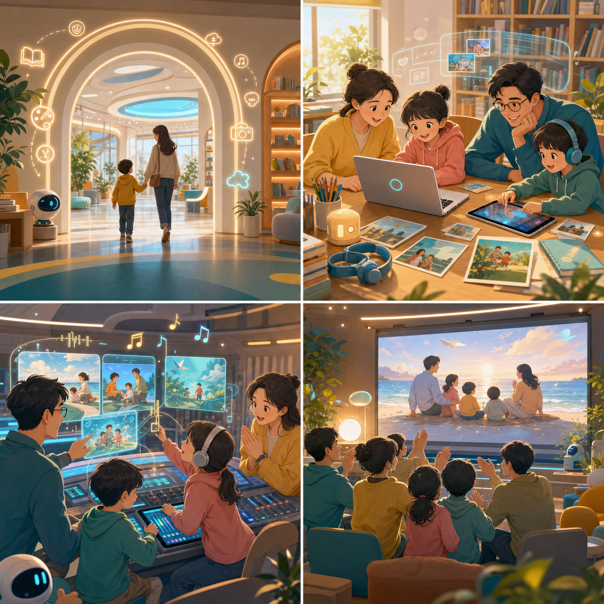
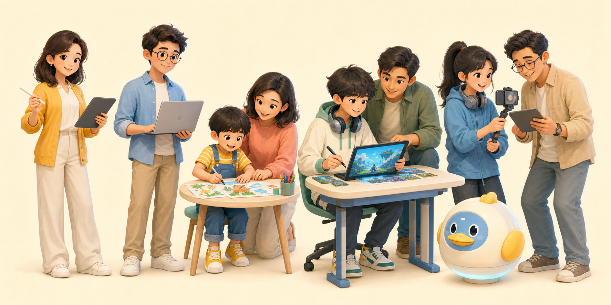

家庭 AI 創作包
完成家庭故事主題、AI 主視覺、3-5 張故事分鏡與每張一句短旁白。
課程定位
這不是把 AI 丟給孩子自己玩，也不是讓大人單向聽講。 我們把 AI 當成親子共同創作的工具：家長負責守護方向與判斷，孩子負責想像、選擇與表達， 一起練習把想法變成看得見、聽得到、能分享的作品。
帶得走的成果
完成家庭故事主題、AI 主視覺、3-5 張故事分鏡與每張一句短旁白。
用 Suno 生成一首適合家庭故事的配樂或主題歌，作為成果展示的聲音記憶。
若時間與工具狀況允許，再把素材套入 Canva/CapCut 模板，做 15-30 秒短影音。
一日流程
親子一起設定主題、角色、三幕故事與旁白方向，練習把模糊想法講清楚。
用 Gemini、ChatGPT 或 Copilot 把文字變成畫面，完成主視覺與故事分鏡。
先完成 3-5 張故事分鏡；再示範 Luma 或 Canva/CapCut 如何把畫面延伸成短影音。
用 Suno 生成配樂或主題歌，學習用情緒、節奏與歌詞描述想要的聲音。
整理封面、分鏡、旁白與主題歌片段；有餘裕的家庭再加做短影音模板。
我們怎麼看 AI
課程會刻意避開炫技式使用，帶孩子練習分辨：哪些內容是真的、哪些只是好看； 哪些圖片適合公開、哪些應該保護家人隱私。AI 可以幫助創作，但方向仍由人來負責。
預計工具
故事發想、分鏡旁白、提示詞整理。
文字生圖、圖片修改、親子故事視覺生成。
圖片生成備援，避免單一平台額度不足。
生成家庭創作包的配樂、主題歌或情緒音樂。
示範圖片轉影片；作為延伸參考，不列為必交成果。
把照片、圖片、音樂與字幕套入模板，作為加分短影音方案。
視覺系統


報名前準備
活動名稱
6 小時親子實作，讓 AI 學習不只停在聽懂，而是變成一組能帶回家分享的作品。
準備開始